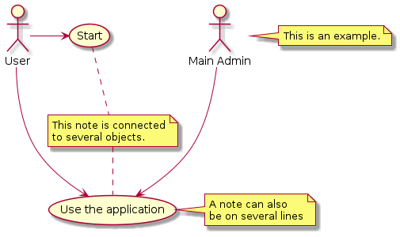
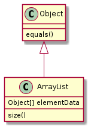

Operating Systems
Tools
Coding
Writing
Else
Sequence Diagram
Use Case Diagram
Class Diagram
Activity Diagram
MindMaps



![participant Alice
participant "The **Famous** Bob" as Bob
Alice -> Bob : hello --there--
... Some ~~long delay~~ ...
Bob -> Alice : ok
note left
This is **bold**
This is //italics//
This is ""monospaced""
This is --stroked--
This is __underlined__
This is ~~waved~~
end note
Alice -> Bob : A //well formatted// message
note right of Alice
This is <back:cadetblue><size:18>displayed</size></back>
__left of__ Alice.
end note
note left of Bob
<u:red>This</u> is <color #118888>displayed</color>
**<color purple>left of</color> <s:red>Alice</strike> Bob**.
end note
note over Alice, Bob
<w:#FF33FF>This is hosted</w> by <img img/plantuml-logo.png>
end note](../../_images/plantuml-10a931809f863d9bde2cb6cb6ceba242ce518c2e.png)
![(*) --> "Initialization"
if "Some Test" then
-->[true] "Some Activity"
--> "Another activity"
-right-> (*)
else
->[false] "Something else"
-->[Ending process] (*)
endif](../../_images/plantuml-1426bb7b0871199f94741b893c1f0edf70e632b8.png)
![title Servlet Container
(*) --> "ClickServlet.handleRequest()"
--> "new Page"
if "Page.onSecurityCheck" then
->[true] "Page.onInit()"
if "isForward?" then
->[no] "Process controls"
if "continue processing?" then
-->[yes] ===RENDERING===
else
-->[no] ===REDIRECT_CHECK===
endif
else
-->[yes] ===RENDERING===
endif
if "is Post?" then
-->[yes] "Page.onPost()"
--> "Page.onRender()" as render
--> ===REDIRECT_CHECK===
else
-->[no] "Page.onGet()"
--> render
endif
else
-->[false] ===REDIRECT_CHECK===
endif
if "Do redirect?" then
->[yes] "redirect request"
--> ==BEFORE_DESTROY===
else
if "Do Forward?" then
-left->[yes] "Forward request"
--> ==BEFORE_DESTROY===
else
-right->[no] "Render page template"
--> ==BEFORE_DESTROY===
endif
endif
--> "Page.onDestroy()"
-->(*)](../../_images/plantuml-5bc99c2e1fc2578f670a384f13dfa8ebe9984967.png)